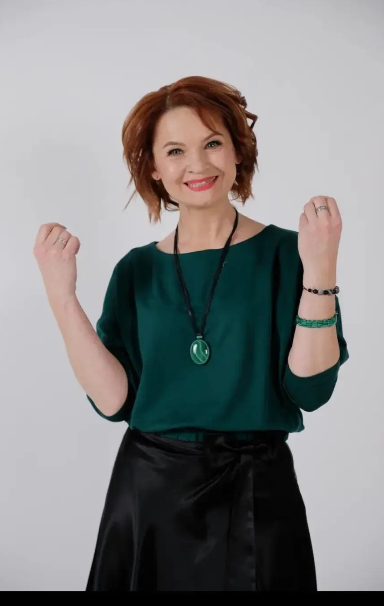
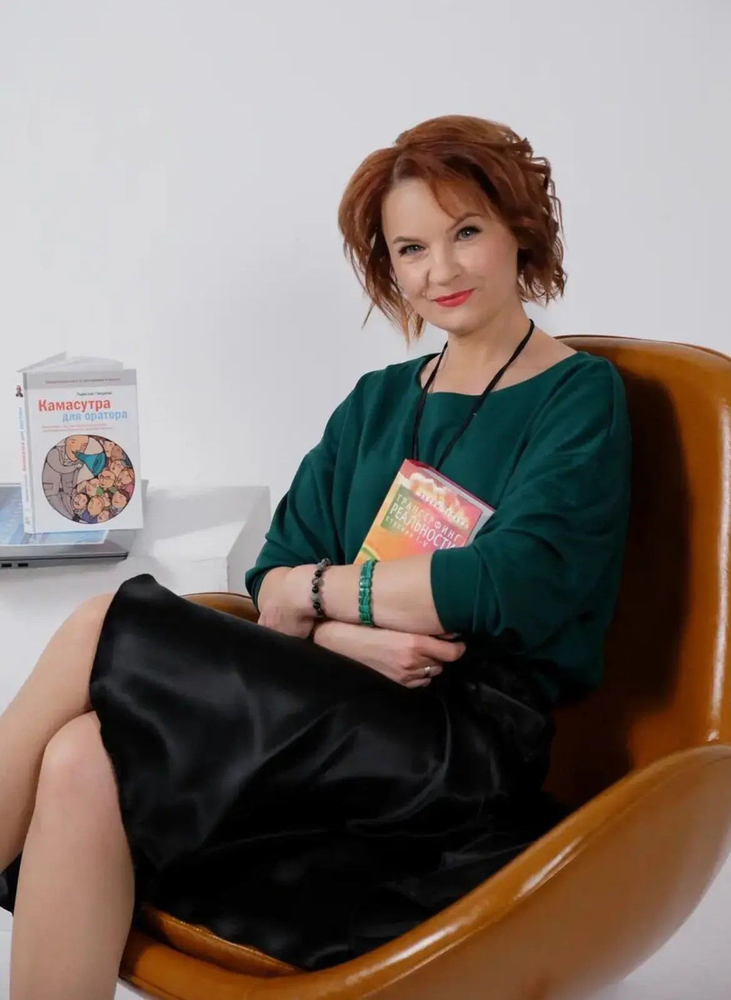

Я выстраиваю голос, который работает на тебя 24/7: на переговорах, в сторис, на сцене и в созвонах. Не «ставлю звуки» — превращаю твою речь в актив, который приносит деньги.

Дело не в том, что тебе нечего сказать. Дело в том, как это звучит. Самых умных и компетентных часто не слышно из-за технических ошибок в речи. Это чинится.
Каждое выступление, после которого «вроде нормально, но не зацепило». Каждый созвон, где решение ушло к тому, кто звучал увереннее. Каждая сторис, которую досматривают не до конца.
Голос — это не про красоту. Это про доверие, продажи и право занимать своё место.
На рынке либо большие потоки, где ты теряешься в группе, либо «фишки» без системы, либо обещания «будешь выступать как Путин». Я работаю по-другому.
Образование по специальности логопедия и дефектология + школа дизайна голоса и речи Седы Каспаровой. Я работаю с физиологией: дыханием, зажимами, постановкой звука. Не приёмы — основа, которая держит всю конструкцию.
Каждое упражнение работает на переговоры, продажи, вебинары и созвоны — туда, где живут твои деньги. Не «красивый голос ради красивого голоса».
Работаю с голосом экологично, без насилия. Мы ищем и усиливаем ТВОЙ стиль и харизму, а не превращаем занятия в логопедическую муштру первого класса.
От простого к сложному. Сначала база, которая держит всё остальное. 80% времени ты говоришь, а не слушаешь меня.
Физиологическая свобода и опора звука. Голос перестаёт садиться и уставать — он держится на дыхании, а не на горле.
Чистота и комфорт для слушателя. Тебя слышно с первого раза, без напряжения с обеих сторон.
Смысловые акценты и твоя уникальная мелодика. Тебе верят без вопросов, потому что слышно, где главное.
Вход для всех — диагностика голоса. Дальше идём туда, где твой результат: регулярная практика в клубе, интенсив в мини-группе или личная работа под бизнес-задачу.

34 года работы с голосом и словом. За плечами — Мордовский госпединститут по специальности логопедия и дефектология и школа дизайна голоса и речи Седы Каспаровой в Москве.
Я возвращаю экспертам их голос — тот самый, природный, сильный и свободный. Потому что знаю: твой контент, вебинары и встречи могут звучать ярче, чем у конкурентов, и приносить заслуженный результат.
«Я продаю не уроки речи. Я продаю право занимать своё место — в переговорной, на сцене и в жизни.»
Дышится и звучится иначе. Не через месяц — после первой же встречи ты чувствуешь разницу в теле и голосе.
Голос перестаёт садиться и уставать после 15 минут спича. Долгие выступления больше не выматывают.
Упражнения без спецусловий. Делаешь в машине или в душе. Никаких «найди два часа в тишине».
Здесь появятся реальные истории предпринимателей, чей чек вырос после работы над голосом.
Это не «поговорили». Я слушаю твою речь по трём опорам, показываю, где именно ты теряешь силу, и даю карту роста под твою задачу. После неё понятно, что чинить и сколько это займёт. Стоимость диагностики засчитываю при покупке пакета.
Да. Встречи онлайн, два раза в неделю — практика выступлений, обратная связь и сообщество предпринимателей и экспертов. Первая встреча бесплатная, дальше 4 000 ₽ в месяц.
Чаще всего голос «не тянет» не из-за дикции, а из-за дыхания, зажимов и интонации. Именно это собеседник слышит как «неуверенно». Диагностика покажет твою конкретную точку роста.
Разницу в дыхании и звучании почувствуешь уже после первой встречи. Устойчивый результат — это регулярная работа, а не один день. Я уважаю физиологию голосового аппарата и не обещаю магию.
Да. Доход всё чаще зависит от созвонов, переговоров, сторис и голосовых, а не только от сцены. Работаем под твою реальную жизнь, а не под театральный образ.
Узнай, сколько ты теряешь, говоря тише, чем можешь — и что с этим делать. 30–40 минут, один на один, с картой роста на выходе.